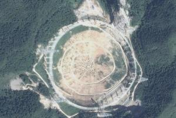

It is estimated that a 500-meter spherical radio telescope FAST will be built in Guizhou Karst depression in 2013. The project's chief scientist, researcher nan rendong of the national observatory of the Chinese academy of sciences, said at the "2006 academic annual meeting of the Chinese astronomical society" held in Shanghai that its observation capability has increased 10 times compared with the world's largest 100-meter telescope, and it will maintain the world's leading position in the next 20-30 years.
On December 21, AVIC Guizhou yunma Aircraft Factory successfully completed the manufacturing of aluminum alloy panel verification model for the 12-meter similar triangles of FAST project using aviation manufacturing technology. The model consists of 100 equilateral triangles of 1.2 meters, and the position accuracy of three intersection holes of each equilateral triangle is kept at 0.1-0.15 mm. The successful manufacture of this model marks an important step for yunma Factory to participate in the planning and construction of the world's largest 500-meter aperture spherical radio telescope (FAST).
It is reported that FAST is one of the nine national science and technology infrastructures reviewed and determined by the national science and education leading group. On July 10, 2007, the feasibility study stage was entered after the National Development and Reform Commission officially approved the FAST project. It is jointly built by the Chinese Academy of Sciences and the Guizhou Provincial People's Government. The construction cycle will take about 5.5 years from the date of approval of the commencement report. The project is to build a giant radio telescope with high sensitivity, about 30 football fields in size, using the original design of Chinese scientists and the unique topographic conditions of karst depressions in southern Guizhou.
FAST will become the world's largest radio telescope after its completion. compared with the 100-meter telescope in Bonn, Germany, which is known as "the largest machine on the ground", FAST has a sensitivity of about 10 times higher. Compared with the U.S. Arecibo 300 telescope, which was ranked first among the top ten projects in the 20th century before Apollo landed on the moon, its comprehensive performance has been improved by about 10 times. As the world's largest single-aperture telescope, FAST will maintain its position as the world's first-class equipment in the next 20-30 years.
FAST's design and technical scheme will not only achieve major breakthroughs in science and technology in six aspects, such as observing neutral hydrogen lines and other centimeter-band spectral lines, exploring the origin of the universe and the structure of interstellar matter, searching for faint pulsars and other faint radio sources, and efficiently searching for extraterrestrial rational life, but also serve as a multidisciplinary basic research platform capable of integrating neutral hydrogen
observation extends to the edge of the universe, observing dark matter and dark energy, looking for the first generation of celestial bodies.
entries related to this topic: China's heavenly eye, Guizhou Pingtang spherical radio telescope, 500m diameter spherical radio telescope, FAST telescope, world's largest telescope, FAST project.